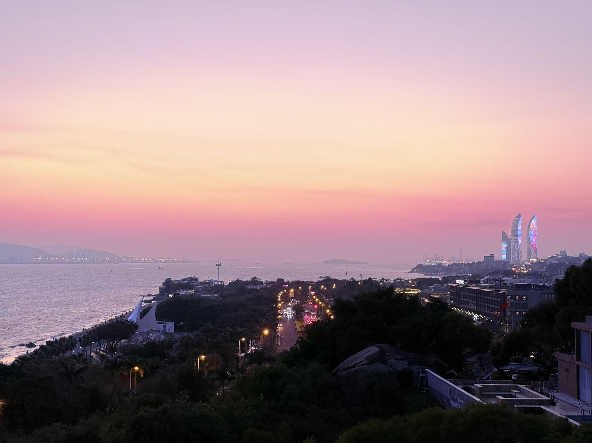
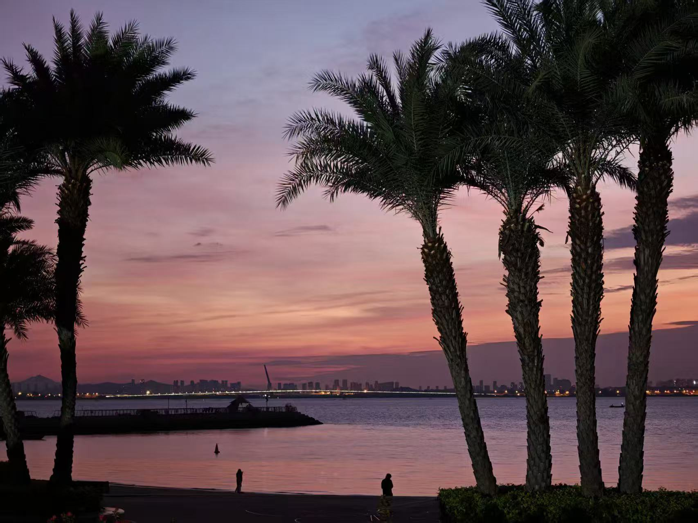
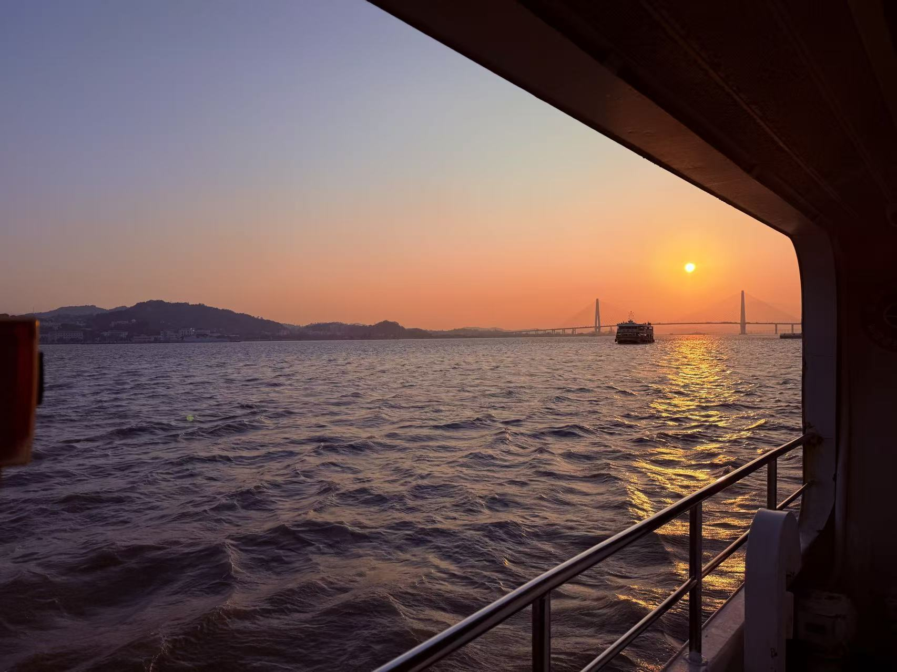

小小俊个人网站
LOCAL TIME
XIAMEN · 24.5°N
01DISTANT TIDE / 18:18
02CITY / LAST LIGHT
03ISLAND / WARM WIND
04SEA / AFTERGLOW
余光档案 / AFTERLIGHT ARCHIVE
日落之后，
故事开始
把每一次出发，留在余光里。
2026
个人档案
生活在别处
01
远方潮汐
DISTANT TIDE · 18:18
点击任意位置，进入我的世界
移动光标或按方向键，翻阅余光